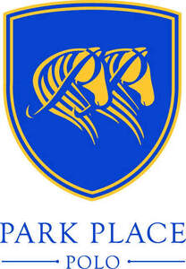

Trade Mark Journal No.2025/028 11 July 2025
UK00004228536 3 July 2025 (9,14,18,25,28,31,35,41,44)

- Class 9
- Mouth guards for sports use; Elbow protectors; Head guards for sports; Gloves for protection against injury; Riding hats; Riding helmets.
- Class 14
- Trophies incorporating precious metals; Medals and medallions.
- Class 18
- Saddlery, harnesses and articles, all made from leather or imitation leather; Umbrellas, bags, straps, leads, horse blankets, feed bags; Equestrian goods; Saddles, bridles, head collars, reins; Parts and fittings for all the aforesaid goods; Sports bags and cases; Articles made of leather or of imitation leather; Hoof guards; Spats and knee bandages for horses; Riding whips; Riding saddles; Knee-pads for horses; Saddle clothes for horses; Bridles for horses; Horse bits; Harness for horses; Pads for horse saddles; Saddle belts; Leather and imitations of leather; Game bags; Garment bags for travel; Umbrellas; Belts; Travelling bags of leather or imitation leather.
- Class 25
- Clothing including leisure clothing and sports; articles of outer clothing for men; Footwear; Headgear; Hosiery; Polo shirts; Tops [clothing]; Shorts; Riding socks; Polo sweaters; Polo neck jumpers; Polo knit tops; Cardigans; Sweat shirts; Shirts; Trousers; Waist belts; Shawls; Collar protectors; Headgear; Helmets; Hats; Breeches; Jodhpurs; Riding boots; Riding trousers; Riding gloves; Riding jackets; Polo boots.
- Class 28
- Knee guards for athletic use; Elbow guards; Polo mallets; Polo balls.
- Class 31
- Horses.
- Class 35
- Promotion of sports competitions and events; Business management of sporting clubs; Advertising; Business management; Business administration; Retail services in relation to sporting equipment; Retail services connected with the sale of clothing and clothing accessories.
- Class 41
- Organisation of sports tournaments; Organisation of sporting events and competitions; Conducting of polo events; Management of events for sporting clubs; Organisation of recreational tournaments; Horse riding instruction; Provision of horse riding facilities; Providing sports facilities for playing polo; Horse training; Polo coaching; Planning and organisation of professional polo tournaments; Training of polo players; Arranging, conducting and provision of polo instructional services; Polo training and education services; Polo entertainment services.
- Class 44
- Breeding of horses; Horse breeding and stud services .
Park Place Polo Limited
Representative: Farrer & Co LLP